鲜丰水果案例解析前言：连锁零售门店的增长秘籍——不要品牌识别系统，要刺激信号系统。今天，在中国成规模的连锁零售品牌都有一套 VI 系统——品牌识别系统。然而，在华与华“ VI ”是禁用词，华与华强调不要 VI 思维。 VI 的“ I ”是“识别”，而我们要的是顾客的购买行为反射。要信号思维，通过符号编码发出刺激信号，形成顾客的行为反射！巴甫洛夫的条件反射实验证明了一件事：“人的一切行为都属于反射的范畴，信号是大脑皮层最基本的活动，而我们每一个行动都是基于一个信号的反射。”这也是华与华工作方法的底层原理，通过信号释放，实现顾客行为反射。
我们所有营销动作的目的，都是为了影响顾客的行为。而顾客的每一个行动，都是基于一个信号的反射。所以，我们只研究通过释放什么信号，才能最有效地实现顾客行为反射。鲜丰水果是在全国拥有 2000 家门店的连锁水果品牌。对于连锁零售门店而言，门店就是营销的主战场。所以，我们关于品牌的创意工作全部围绕门店展开，每一家鲜丰水果门店，本质上都是一套信号系统。我们要做的就是在每一个环节设置不同信号，让顾客像我们希望的那样，关注、走近、拿起、购买，最终带来鲜丰水果门店业绩的增长。当我们从刺激反射原理理解门店，就掌握了提高门店业绩增长的技术。今年，我们围绕门头、门面、店内陈列，升级了鲜丰水果门店的信号系统。全新升级的门店开到哪里都秒杀一条街。在疫情的影响下，鲜丰水果翻新门店逆势增长，同比去年客单数增长 23 %、销售额同比去年增长 16 %！本期文章，将为你解析华与华是如何在鲜丰水果门店信号系统上“机关算尽”，让每一个信号都带来顾客行为反射，实现门店业绩增长的。鲜丰水果门店信号系统打造三大要点：1 、一个超级符号让顾客停下来2 、一句品牌谚语让顾客走进来3 、一套陈列规划让顾客买起来
1
一个超级符号让顾客停下来华与华提出货架思维，一切创意要货架导向，产品出现的一切场合都视为货架。对于鲜丰水果的门店而言，街道就是货架，门面就是包装。我们不是和其他水果店争取消费者，而是和街道上所有释放信息的门店争夺消费者的注意力。我们要释放秒杀一条街的强大信号，才能吸引更多顾客关注、驻足停留。
▲鲜丰水果旧门店
引爆集体潜意识，实现“ 1”→“ 100”的传播门面就像是一个巨大的“流量漏斗”，有多少人经过且注意到我们的门店，这是生意的生死点！只有先让更多人关注、停留，才能进一步提高购买的人数。根据巴甫洛夫的理论：信号能量越强，则刺激反射越大。所以，我们首先要做的就是，在门面上放置一个秒杀一条街的刺激信号，争夺这条街上最多的顾客关注和停留。如何能够释放秒杀一条街的信号？我们说做事情要有哲学级洞察，原理级解决方案。华与华认为，一切的传播都是符号的编码和解码。我们所做的一切努力就是要将品牌
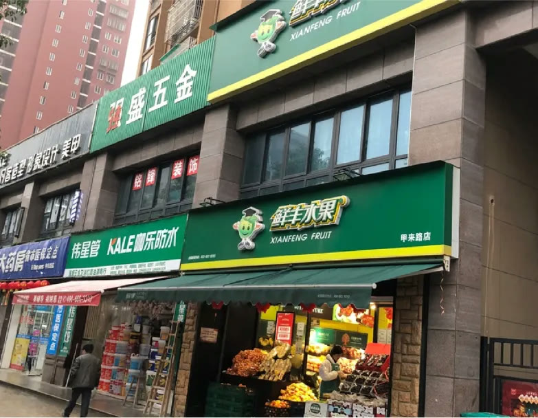
价值信息，以最小的传播成本实现最大的传播效果，解决编码和解码过程中信息损耗的问题。
在信息传播的过程中，我们追求的是什么？是我释放一个“ 1 ”的信号，尽可能降低过程中的损耗，让顾客接收到“ 1 ”。但是，通常传达的内容与传达率是成反比的，我们想要传播“ 1 ”，但传播过去之后，可能只有“ 0 . 1 ”被受众接收了，传播过程中的损耗是巨大的。如何解决损耗的问题？认识论决定方法论，对传播的不同认识，决定了我们提高传播效率的不同方法。华与华方法追求的不仅仅是让我们传达出“ 1 ”，受众完整接收到“ 1 ”，而是要我们传达出“ 1 ”，让受众接收到“ 10 ”、甚至是“ 100 ”。
那另外的“ 99 ”在哪？就在每一个受众的大脑里。人类大脑中、潜意识中已经为我们储存好了信息，我们只需要点燃这些信息的引线，就能点燃人类大脑中的信息。我们传播出去的只是一个“信息爬虫”，把他脑子里面本来就有的东西（集体潜意识）给抓取出来。
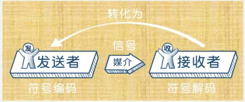
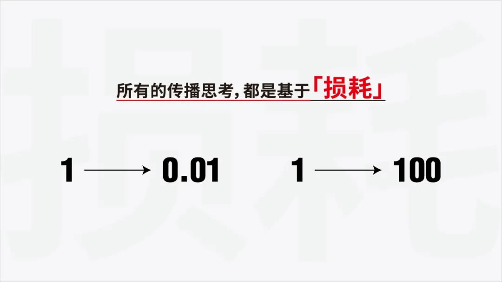
这就是超级符号的原理，引爆和卷入人类大脑深处的集体潜意识，让我传播出去的东西，最后激发出消费者脑海里的更多东西，得到“ 100 ”。一个 60亿人都认识的生理级超级符号我们要点燃引爆人类大脑中的信息，这就决定了超级符号不是创造，而是选择。去选择人们本来认识，本来就熟悉的符号。在鲜丰水果项目中，我们找到两个最有代表性的符号，“相加”组成了鲜丰水果的超级符号。
这是一个 60 亿人都认识、都熟悉的超级符号；它也是一个代表水果、代表鲜甜，让人看了就想吃的生理级的超级符号！
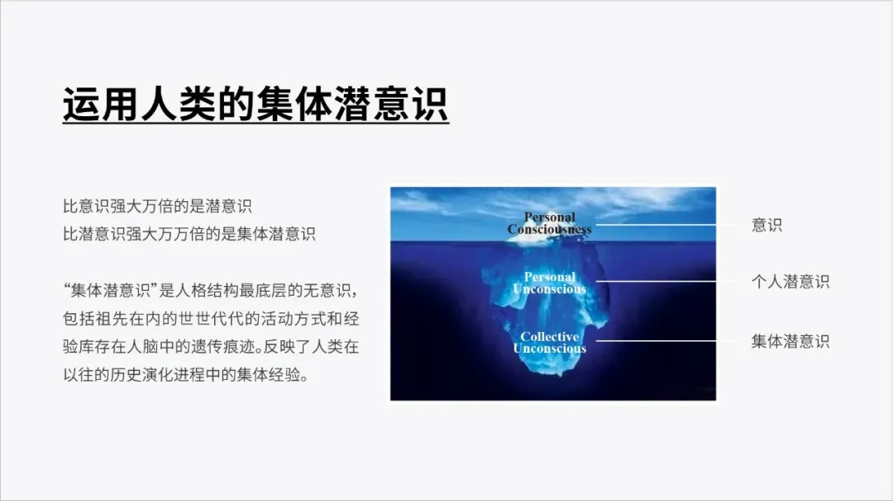
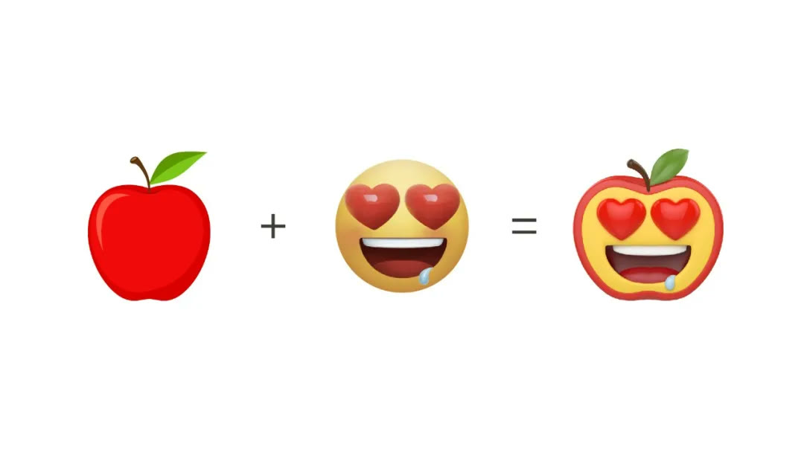
它具有唯一性、权威性，当鲜丰水果占有它时，就具有了排他性，它不仅能刺激视觉更刺激味蕾，还能卷入受众的浓烈情绪。作为水果行业，我们不思而得选择的第一个符号就是苹果，苹果是水果行业最具代表的符号。有了这个基础，我们还要思考如何将它私有化。当我们在寻找能表达新鲜、表达好吃的时候，我们找到了另外一个符号，一个全球 60亿人都认识和熟悉的符号——“眼冒爱心”、“流着口水” emoji 表情。
Emoji 表情在今天已经超越国别、超越文化，是全球互联网平台通用的视觉语言系统，也是全球人都认识的超级符号。全球约有 90 %的在线用户频繁使用 emoji 表情，每天有 60 亿个 emoji 表情符号被传送。我们每天都用 emoji 进行交流，也都用这个“眼冒爱心”、“流着口水”的表情表达超级想吃的情绪。1998 年，日本无线通信中第一次使用这个视觉情感符号，到今天无论是苹果、三星、facebook 、 twitter 、谷歌，还是腾讯、微博、微信、阿里巴巴，每一个实现人与人交流的互联网平台也都有一套基于 emoji 系统设计的表情包。Emoji 表情就像是汉字，每一个平台都创造了平台的字体，让这个语言系统超越了国别，超越了文化！
所以，当把这两个超级符号组合在一起，就创造出鲜丰水果的超级符号。一个人人都认识、熟悉、喜爱的超级符号；一个人人看到就会觉得好吃到想流口水的超级符号；一个最能够代表水果鲜又甜的符号！生理级超级符号，实现生理级的反射巴甫洛夫的条件反射实验还证明：行动能够通过潜意识来实现，不需要说服，也不需要说清。想让顾客感觉到好吃到流口水，就用一个流口水的符号释放信号，刺激顾客。华与华的超级符号有平面的、有工业设计的。而鲜丰水果的超级符号，这是第一个突破了视觉的生理级别的超级符号。当我们将这个符号放上门头，释放强大信号，不仅能刺激顾客的视觉，更能刺激顾客的味蕾，卷入受众的浓烈情绪。让更多经过的路人关注、停留和走近我们。
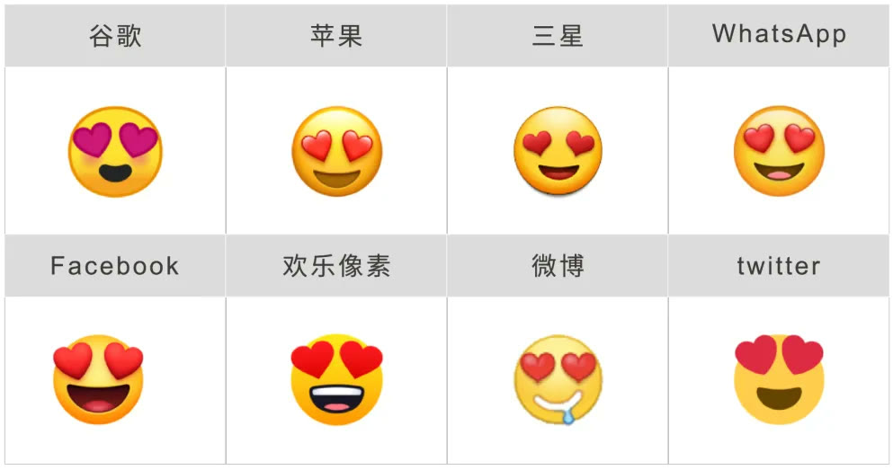
2
一句品牌谚语让顾客走进来有网友这样评价华与华为鲜丰水果打造的全新门店：“鲜丰水果门头解决识别和记忆成本的问题，消费者快速发现门店，再看门头下面，大大的承诺‘鲜丰水果鲜又甜，不鲜不甜不要钱’，这句话犹如一颗炸弹丢入消费者购物环境中，试问哪一个消费者看到这句话在购买水果时疑虑不会大大降低！”“鲜丰水果鲜又甜，不鲜不甜不要钱”这就是我们为鲜丰水果创造的品牌谚语。为什么消费者一看到这句话，就会被打动？
直击水果行业最大痛点：水果非标准1997 年， 17 岁的韩树人向老乡借了 80 元钱，凑了 200 元买了一杆秤和一辆二手三轮车，利用下班后的空余时间兼职做起了卖水果的生意，这便是鲜丰水果的起步。为了提供更新鲜更好吃的水果，鲜丰水果向上游渗透打造水果全产业链，基地直采，建立采购标准；自建物流，实现每日配送；及时挑拣，剔除损伤不新鲜的水果。从门店，向物流、采购、产地等全产业链延伸业务，层层把控水果品质!
但是，项目组在市场调研时发现，水果行业最大的痛点就是没有标准化。水果是非标品，行业没有统一标准，最终到顾客那里，顾客也就没有选择标准，没有判断能力。除了在鲜丰多次买过水果的消费者，不然一般的消费者对鲜丰水果的新鲜品质还缺乏认知。如何传达鲜丰水果的产品品质？我们遇到了行业最大的痛点，那我们就回到行业中寻找智慧。每个人都有买水果的经历，卖水果时，店老板通常会说什么来打动消费者？每当我们犹豫不决时，水果店老板最常用的必杀技就是——“不甜不要钱”，当我们听到老板说“不甜不要钱”，我们就毫不犹豫地买单了。所有最普遍的现象都一定有最深刻的道理。为什么水果行业会有这句话？为什么这句话能打动我们购买？我们用华与华的品牌成本原理去分析，就能够理解。我们做品牌是为了降低三个成本：降低顾客的选择成本、社会的监督成本，品牌的营销传播成本。而且顾客选择成本最低的品牌，就是选择机会最多的品牌。“不甜不要钱”就是提供最低的选择风险，“不甜不要钱”就是水果行业原生出的智慧，就是能够打动顾客购买的强刺激信号。一句话提高社区生意的回头率据统计，水果店平均每店每月顾客不到 2000 人（去重后），其中 65 %都是周边 2 - 3 个小区的顾客。所以，对于鲜丰水果这样的水果店而言，最重要的指标就是顾客回头率。华与华每年都会外出游学，我们曾经参访过名古屋第一酒店——威斯汀城堡酒店。
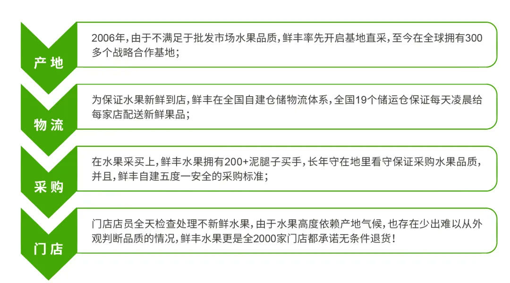
▲名古屋威斯汀城堡酒店
这个酒店有过一个统计：1 ）在酒店期间没有发生过任何问题的顾客的回头率为—— 84 %；2 ）在酒店期间发生问题但并未被解决的顾客的回头率为—— 46 %；3 ）在酒店期间发生了问题但被解决了的顾客的回头率为—— 92 %。也就是说，投诉问题并被解决的回头客是未被解决的 2 倍。所以，如果出现了投诉的现象，我们就要全力以赴地去解决。因为你解决好的话，这些顾客的回头率会远远高于什么都没有发生的顾客。“不甜不要钱”就是让那些本来要离你而去的顾客，再次回头并且多次光顾！打造每一个店员都能脱口而出的品牌谚语华与华主张广告口号要向俗语、谚语和顺口溜学习，广告口号的底层逻辑是修辞学。亚里士多德说：“修辞学就是说服人相信任何东西，以及促使人行动的语言艺术！”在我们看来，这也是广告口号的底层逻辑和最终目的。
基于“不甜不要钱”和“鲜丰水果”的品牌名，我们创作出这句“鲜丰水果鲜又甜，不鲜不甜不要钱”的品牌谚语，这句口号瑟吉欧简单的字词、普通的道理、有节奏的句式、押韵、还能使人愉悦。三个“鲜”两个“甜”，又能够和超级符号形成互相增益。最重要的是，华与华强调要基于最终使用的场景进行创意。我们不是要一句写在新闻稿里的话，也不是要一句写在企业文化里的话。鲜丰水果的生意是做街坊邻居的生意， 2000 家门店店员的叫卖，才是鲜丰最多的宣传方式，这句话就是每一天、每小时，每一个店员都会跟消费者说的一句话。九大机关改造门面，实现销售额同比增长 10%当我们有了超级符号和品牌谚语这两个强大的信号之后，我们就思考如何用在门面上。针对鲜丰水果的门店，我们从 46 个维度，梳理了鲜丰水果门店所有可以释放信号的方式，并结合鲜丰水果门店的实际情况，最后对门面进行了 9 大改造，释放强大信号，刺激顾客的行为反射。
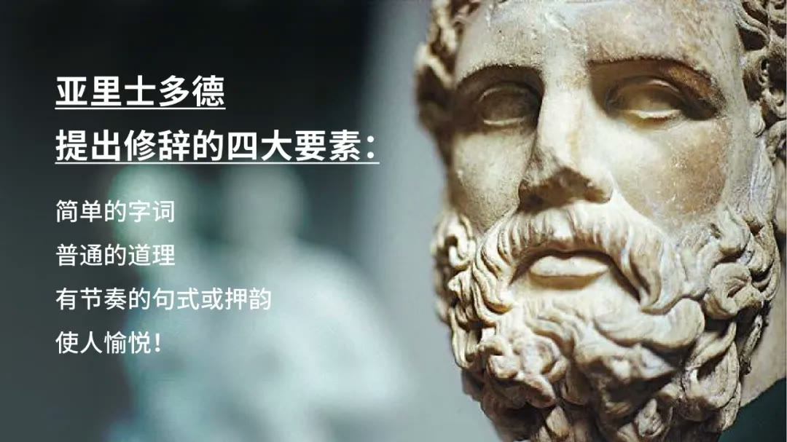
▲鲜丰水果门面设计九大机关
客户快速执行是对方案最大肯定。提案当天，鲜丰水果创始人韩总就表示说：“我们找华与华找晚了，这是物超所值！”当晚回去召集高层干部共识； 10 天之后第一家全新鲜丰水果门店亮相杭州凤起路，全新门店秒杀一条街，开业火爆； 30 天后，鲜丰水果加盟商大会上发布品牌升级，并把全新门店 1 : 1 搬到发布会现场，样板店被加盟商围个水泄不通。最终，加盟商签约量超预期近一倍，客户执行是对我们方案的最大肯定！
▲超级符号发布道场
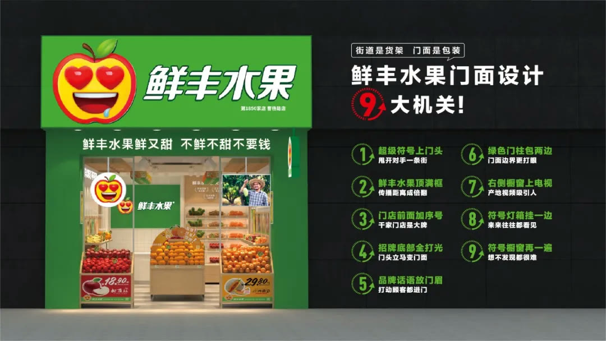
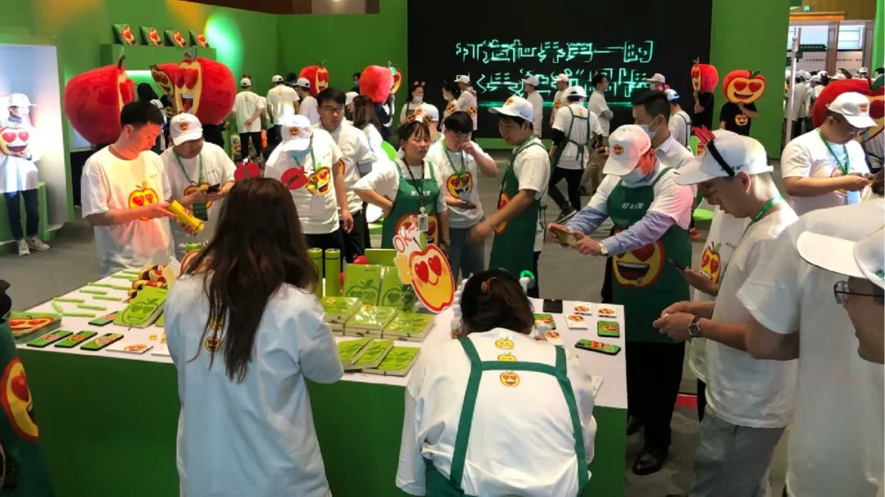
▲第七代样板店加盟商挤个水泄不通
今天，我们走访鲜丰水果青岛、杭州、上海等市场，到任何一个地方都会发现，基于超级符号升级的鲜丰水果门店，真正实现了秒杀一条街的效果！
▲全新鲜丰水果门面释放强大信号，开到哪里都是秒杀对手一条街！
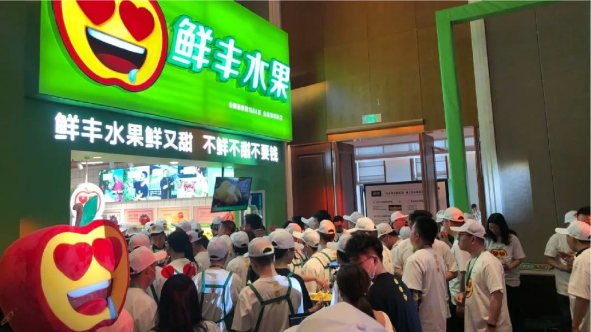
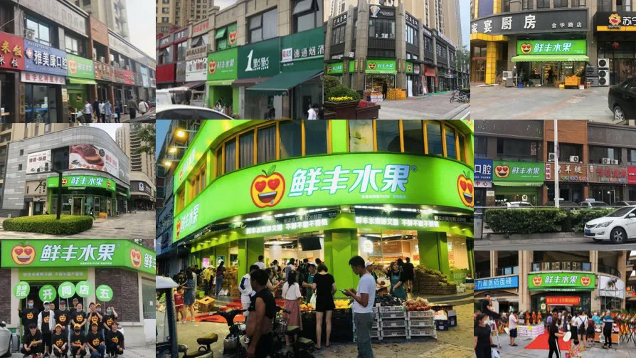
据统计，翻新门店比未翻新门店（其他所有因素都不变，仅翻新门面）销售额同比增长高 10 %，客单数也同比增长高 10 %，毛利额同比增长高 13 %。如果一家水果店每天销售额是 5000 元，不到 3 万的翻新成本，每年销售就能提高近 20万。
3一套陈列规划让顾客买起来零售业有一个标准公式：销售金额=客单 X 客单价客单价=动线长度 X 停留率 X 注目率 X 购买率 X 购买个数 X 商品单价！
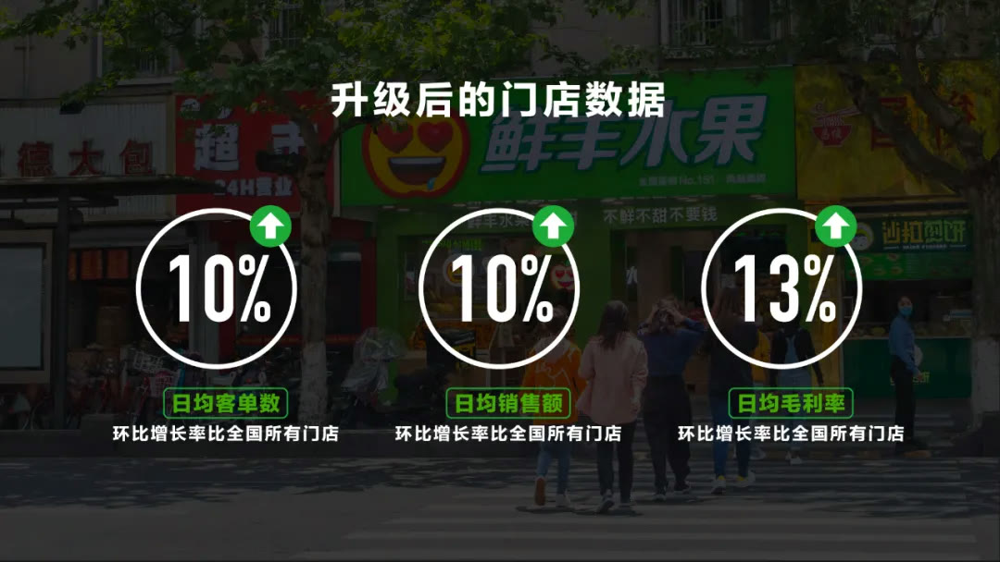
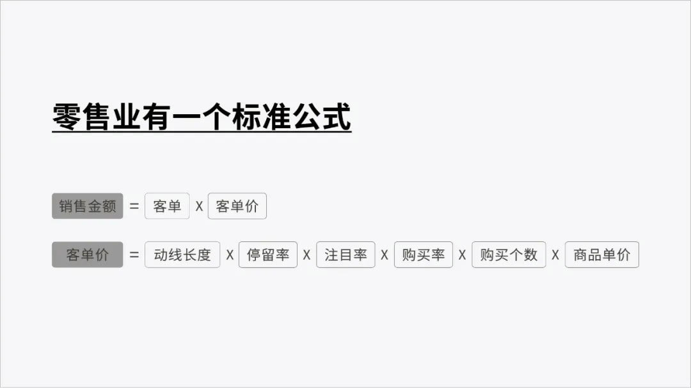
当我们吸引顾客关注，打动顾客进门之后，接下来我们要做的就是在每一个环节进行提升，要让顾客在门店尽可能地多走动、多购买。在店内我们要实现，不放过空间每一寸面积，不浪费顾客每一秒注意力，不断释放信号，影响顾客行为。对于鲜丰水果门店，我们研究发现两个问题：1 ）一般情况下，“左前右后”顾客流量少停留短顾客进店会从右手边开始查看商品，所以，左侧前侧最容易被忽视；门店收银台一般在左手边，右手边拐角的商品，也容易被忽视。2 ）冷柜容易被忽略冷柜在最内侧，一般陈列的都是保鲜期短的进口水果，顾客可能远远的看上一眼不会走近。
▲鲜丰水果门店热力图
产品陈列规划就是产品销量规划一切的行为都是信号的刺激反射。顾客进入一个门店，并不完全是主观意识下、有计划地行走，而是会受门店释放信号的引导。因此，我们在门店打造了三大信号点，分别设置了香蕉专区、佳沛专区和冷柜尝鲜区，释放信号引导顾客的行为。
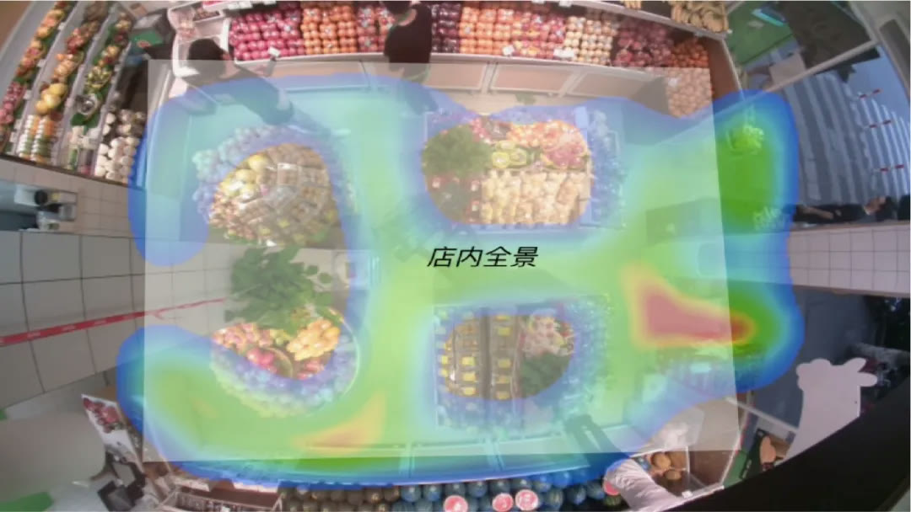
▲店内三大信号点
以香蕉专区为例：经过研究，我们选择了香蕉产品，作为鲜丰水果的吸客引流单品。一方面，香蕉产品是贯穿全年销售、老少皆宜，所以贡献了鲜丰水果最多的客单；另一方面，香蕉客单价低，通过香蕉吸客之后，能够进一步连带其他产品。当我们有了这个策略之后，又了解到鲜丰水果创始人的第一家门店，就是依靠 0 . 9 元香蕉转亏为盈。
华与华方法强调，企业过去的成功一定是做对了某些事情，我们的任务就是去捡回来，再把它擦亮。所以，我们重新推出了 1 . 99 元好评蕉放在入口处。除了用物料打造一个香蕉专区之外，通过放大“ 1 . 99 元”，释放强大信号。
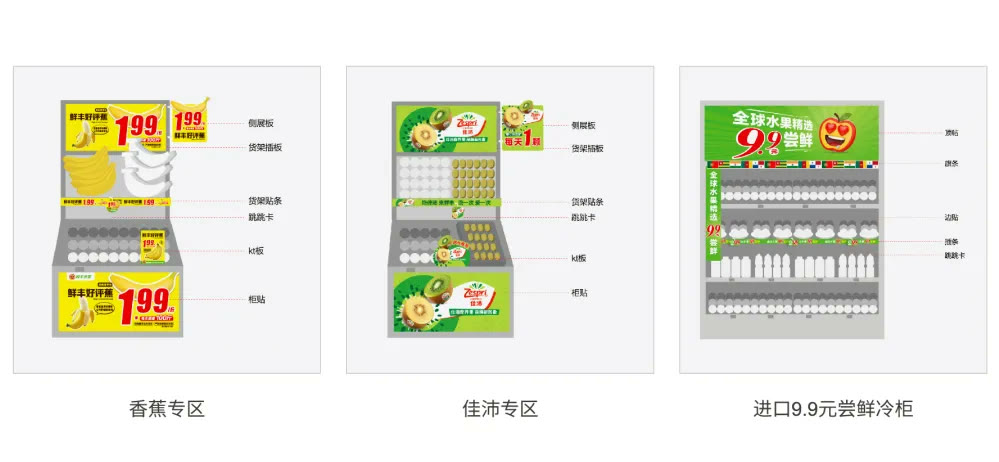
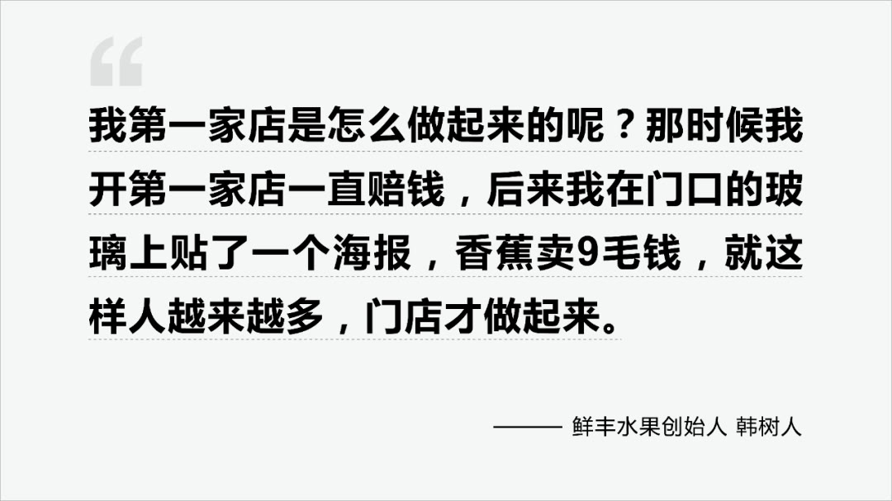
▲项目成员在门店做门店改善， 1 . 99 元/斤香蕉放在门口，顾客就排队抢购
通过三大信号的设置，改变顾客动线和停留时间，提高了产品销量和门店业绩。仅好评蕉一个单品就帮门店客单环比再涨 10 %，目前好评蕉占据门店三分之一的客单数。也就是每三个人就有一个人买好评蕉，越来越多顾客，买香蕉就会到鲜丰水果。
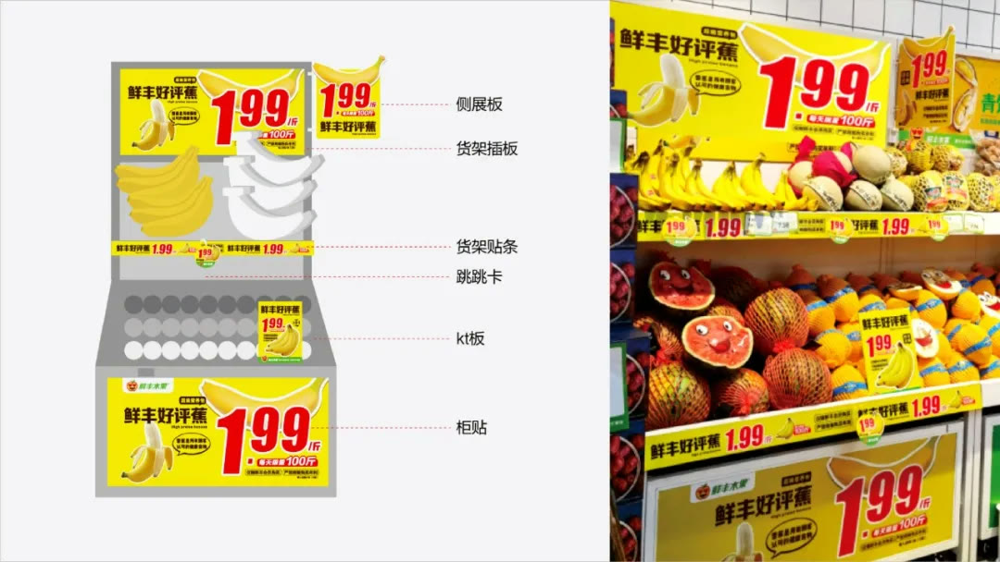
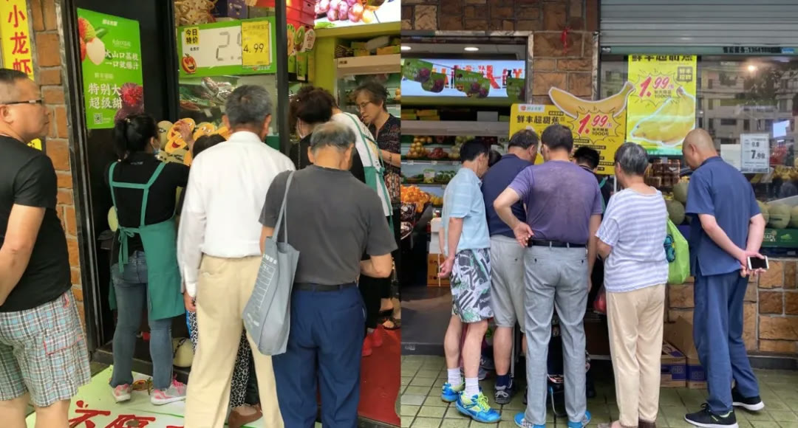
华与华持续改善再升级：一套门店自动化持续改善当下所有企业都追求数字化转型，数字化的核心是什么？是大数据！什么是大数据呢？机器没有心智，机器只能做统计，统计这个信号对应哪个行为的反射，然后根据新产出的信号来推断他会有什么行为反射。华与华方法的底层逻辑是信号反射，我们关注的是行为而不是意识。我们所追求的是行为，行为就是可以测量的数据。通过释放一个信号，形成一个可测量的行为数据。经过大数据统计我们就知道什么信号能够实现顾客行为反射，再把这个“数据”投喂给机器，我们就能找到最有效的实现顾客行为反射的信号。打造鲜丰水果自动化改善 1 . 0 系统连锁零售企业几乎都有一套数据化系统，用来记录门店的客单数、客单价、连带率、毛利率等。这些数据的背后，其实就是顾客行为数据的体现。在我们研究鲜丰水果系统的过程中，发现后台有一个叫“智能诊断”的功能，也就是基于销售业绩实时反馈给门店要关注什么指标，我们认为这是一个值得改善的、价值巨大的产品。
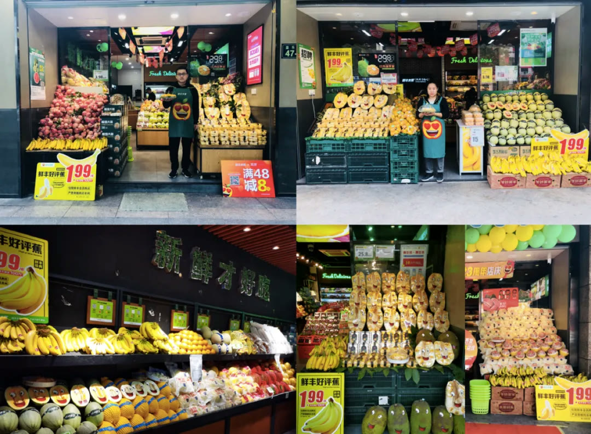
之前的智能诊断功能，只提示问题和关注要点，没有导向如何影响顾客行为，门店不清楚如何改善。我们基于门店可能遇到的不同问题，分别梳理了对应的改善对策，在原基础上打造了《鲜丰水果门店自动化改善 1 . 0 》版本：
▲门店自动化改界面示意
实现：1 ）每一段时间扫描门店经营数据，基于数据，会给门店具体动作的指导；2 ）门店执行后的效果，会通过经营数据得到反馈；3 ）基于新的经营数据再提供行为指导。如此循环往复，形成一套动态的门店自动化持续改善。门店自动化改善 1 . 0 系统只是基础，是数据的统计过程，在这个过程中基于门店业绩，也就是顾客行为的反馈，就可以判断出实现顾客行为反射的最有效的信号，基于这个判断自动改善系统能够得到进一步的进化。本文总结理解了刺激信号反射原理，就掌握了提高门店业绩增长的技术。华与华通过超级符号、品牌谚语、持续改善三大核心技术，从门头到门面，从店内产品陈列设置到物料设置，“机关算尽”为先鲜丰水果设置门店信号系统。今天，全新的鲜丰水果门店开到哪里都秒杀一条街，顾客像我们希望的那样关注、走近、停留和购买！
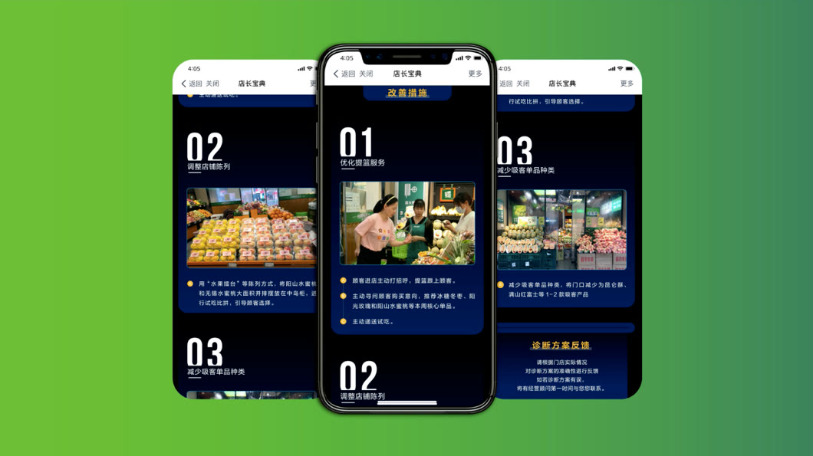
截止 11 月底，在疫情的影响下，鲜丰水果翻新门店逆势增长，同比去年客单数增长23 %；销售额同比去年增长 16 %；毛利额同比增长 16 %。每一个信号都带来顾客行为反射，每一个信号都带来门店业绩的增长。本文知识点回顾：刺激反射是华与华方法的底层逻辑1 .人的一切行为都是基于信号的反射。2 .信号能量越强，则行为反射越大。超级符号引爆集体潜意识1 .传播的本质是符号的编码和解码，华与华追求的不是“ 1 → 1 ”的无损传播，而是用一个符号爬虫引爆人类大脑中的集体潜意识，实现“ 1 → 100 ”的传播。2 .超级符号不是创造的，而是选择的。最低的选择成本实现最多的选择机会1 .品牌的目的是降低三个成本：社会监督成本、顾客选择成本、企业营销成本。2 .投诉问题并被解决的回头客是未被解决的 2 倍。门店就是一个信号系统，不断释放信号，影响顾客行为1 .产品陈列规划就是产品销量规划。2 .门店就是一个信号系统，通过不断释放信号，影响顾客行为。